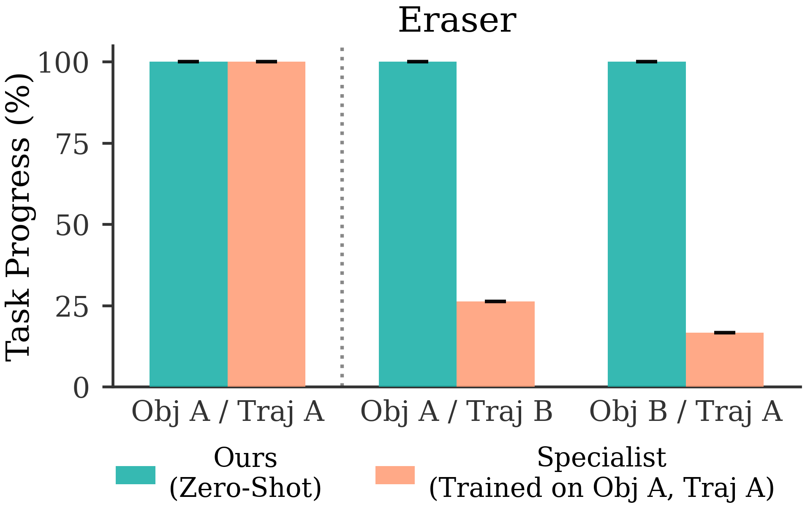
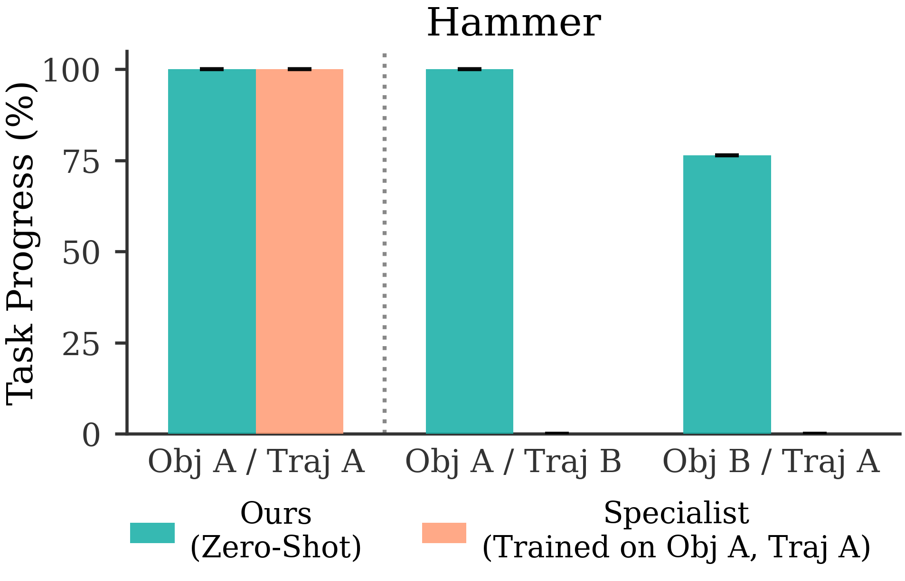
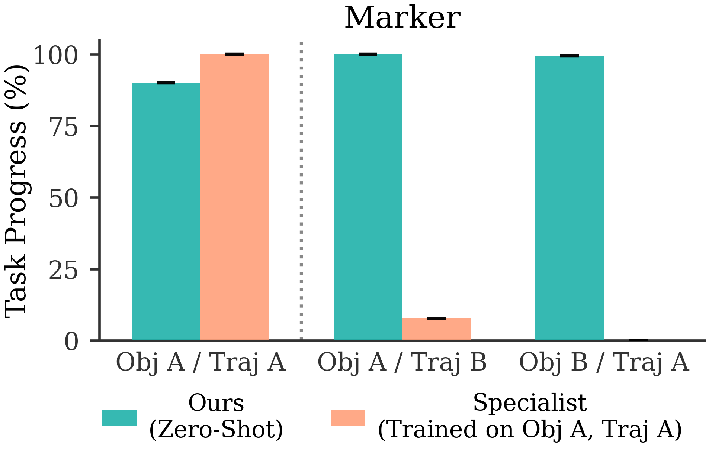
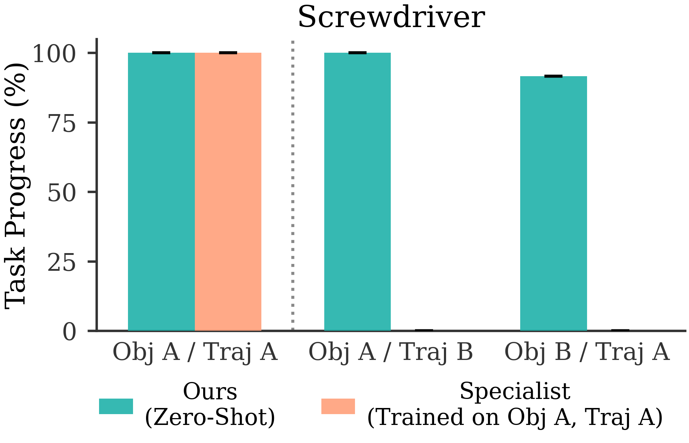

SimToolReal: An Object-Centric Policy for Zero-Shot Dexterous Tool Manipulation
以论文正文、实验、附录与原始图注为证据的参考级中文精读
一句话贡献：提出 SimToolReal：在仿真中程序化生成大量工具状物体，训练一个物体中心 goal-conditioned RL policy，使真实机器人能根据人类视频提取的目标位姿序列零样本完成多类工具操作。
关键词：tool manipulation; object-centric policy; sim-to-real RL; procedural tools; goal pose trajectory; zero-shot
1. 论文速览与证据链
1.0 一句话贡献与关键词
提出 SimToolReal：在仿真中程序化生成大量工具状物体，训练一个物体中心 goal-conditioned RL policy，使真实机器人能根据人类视频提取的目标位姿序列零样本完成多类工具操作。这一定义把 SimToolReal 的任务对象、核心机制和预期收益放在同一句话中。关键词包括：tool manipulation; object-centric policy; sim-to-real RL; procedural tools; goal pose trajectory; zero-shot。这些概念共同界定了该工作位于灵巧操作、动作表示、感知融合或跨具身学习中的具体技术位置。
1.1 技术定位与核心贡献
SimToolReal 把工具使用抽象为“让工具物体跟随一串目标位姿”。训练时不针对某个锤子、刷子或任务，而是在仿真中生成多样 tool-like primitives，训练单一 goal-reaching policy；部署时从一段 RGB-D 人类视频中提取目标位姿轨迹，再驱动同一个 policy 零样本执行。它属于 sim-to-real RL、object-centric manipulation 和 dexterous tool use。相比 imitation retargeting，它不直接模仿人手接触；相比 task-specific RL，它不为每个工具和任务重新设计 reward；
1.2 端到端信息流
相比固定抓握，它允许手内重抓和姿态调整。摘要报告 SimToolReal 相比 retargeting 和 fixed-grasp 方法提升 37%，并接近 task-specific specialist RL；真实评估覆盖 120 rollouts、24 个任务、12 个物体实例和 6 类工具。这个规模支撑其“general tool policy”主张。
2. 研究问题与动机
2.1 论文面对的真实瓶颈
工具操作要求抓薄物体、手内旋转、保持功能姿态并进行有力交互。传统 teleoperation 数据难采，专用 RL 又需要为每个物体和任务建模、调 reward。论文试图训练一个不依赖具体工具和任务的通用物体中心策略。工具使用的功能目标通常是物体轨迹，而不是人手关节轨迹。刷桌、敲钉或使用铲子，关键是工具头或工具整体到达某些位姿。SimToolReal 因此让策略追踪 object goal poses，把手的接触策略留给 RL 自己发现。训练中的程序化工具 primitives 覆盖 handle/head 几何、质量分布和随机目标位姿；测试时真实工具虽然没见过，但都能被表达为带局部 keypoints 的物体目标。
2.2 既有路线为何不足
这个共享 object-centric 表示是 zero-shot 的基础。论文假设很多工具任务可以被分解为物体位姿序列，并且从人类 RGB-D 视频中能可靠恢复目标物体网格、抓取区域和位姿轨迹。若任务依赖不可见接触力或柔性工具形变，这个假设会受限。
4. 方法、表示与训练流程
4.1 总体方法链路
仿真中每个 episode 随机选择工具状 primitive、初始位姿和机器人初始状态。目标是先从桌面抓起工具，再让物体依次到达随机采样的 goal poses。若物体掉落则 reset。主要目标项 r_goal 使用当前物体位姿与目标位姿的距离 d(o_t,g)，并加入 sparse success bonus。距离由局部 4 个 keypoints 的最大误差定义，成功阈值 ε 在实验中用于判断 goal pose 是否达成。工具 primitive 由 handle 和 head 组合，几何形状包括圆柱和长方体，并随机化尺寸与密度。这个设计覆盖刷子、锅铲、马克笔、锤子等日常工具的结构共性。
4.2 核心输入、输出与表示
部署时先采集 RGB-D 人类视频，用 SAM 3D 等视觉基础模型生成 metric-scale object mesh，并提取 3D grasp/contact 区域和目标位姿轨迹。策略按当前 goal pose 执行，达到阈值后切换到下一个 goal。固定抓握方法能追踪工具末端轨迹，但一旦需要手内重定向、薄物体抓取或从不同初始姿态恢复，就容易失败。SimToolReal 让 RL 学会动态接触策略，因此比固定抓握更适合真实工具。
SimToolReal 的训练与真实推理闭环

统一输入输出与工具条件策略

工具与手部关键点表示

从人类/仿真动作到机器人执行的运动学重定向

SAM 驱动的真实场景对象分割

5. 实验设计、结果与消融
5.1 任务、数据与评估协议
真实评估覆盖 DexToolBench 中 24 个 task trajectories、12 个 object instances 和 6 类工具，共 120 rollouts。指标是 Task Progress，即成功跟踪 demonstrated goal poses 的比例。摘要报告 SimToolReal 相比 prior retargeting 和 fixed-grasp 方法提升 37%，同时接近在特定目标物体和任务上训练的 specialist RL。这个结果说明通用 policy 没有为泛化牺牲太多专用性能。specialist policy 只针对一个 object 和 trajectory 训练，理论上应有优势。
5.2 主结果如何支持论文主张
SimToolReal 能接近其表现，说明程序化工具和 object-centric reward 学到的是可迁移工具操作技能，而不是某个物体的记忆。论文消融 SAPG、PPO、asymmetric critic 和 reward 设计。训练 reward 曲线说明 RL 细节会显著影响最终能力，通用工具策略不是简单换个输入表示就能自动学成。仿真中 episode reward 和 unseen DexToolBench Task Progress 的相关性用于说明训练目标确实驱动真实泛化。若仿真 reward 高但真实 Task Progress 不涨，则 sim-to-real 目标就不可靠。
跨任务与跨实例的主要真实结果

动作动词与工具实例的组合泛化

仿真训练奖励与样本效率

仿真任务进度与奖励的联合变化

共享策略与工具 specialist 的三种配置

固定握持对工具使用的作用

仿真与真实工具实例对应

多类工具任务的功能阶段

刷子任务的仿真—真实对比

橡皮任务的仿真—真实对比

锤子任务的仿真—真实对比

6. 复现路线与工程风险
6.1 最小可行复现路径
先在仿真中复现 object-centric goal-reaching policy 和程序化工具生成，再做少量真实工具 zero-shot rollout。不要一开始就复现完整 24 任务；先验证目标位姿追踪和 grasp/lift/reorient 基本能力。真实部署依赖 RGB-D 人类视频、物体分割、mesh/pose 估计和 goal trajectory extraction。视觉链路错了，policy 会追踪错误目标，因此需要单独可视化每个 goal pose。需要灵巧手、真实工具对象、物体 pose tracking 和安全控制。工具操作涉及有力接触，sim-to-real 的摩擦、质量和碰撞参数会明显影响成功率。离线看仿真 reward、goal pose reach rate；真实看 Task Progress、掉落率、重新抓握次数和任务类别分布。只报告单个工具成功不够。
7. 分析、局限与边界
7.1 最有价值的贡献
SimToolReal 最有价值的是 object-centric abstraction：把人类演示、仿真训练和真实执行统一到工具物体目标位姿序列上。这个抽象比手部动作 retargeting 更适合跨工具泛化。程序化训练、真实 120 rollouts、6 类工具和与 specialist/retargeting/fixed-grasp 的对比，共同支撑其 zero-shot tool-use 主张。方法依赖可恢复的工具 pose 和可表达为 rigid object goal poses 的任务。柔性工具、不可见接触力、复杂环境约束或需要功能语义判断的任务仍可能失败。可以加入触觉反馈处理工具滑动和力控，也可以把 object-centric policy 接到 VLA planner，让语言指令自动生成目标位姿序列。
记号笔任务的仿真—真实对比

螺丝刀任务的仿真—真实对比

证据深挖：机制、实验与复现判断
为什么固定握持既重要又限制结论
固定手—工具 grasp 显著降低了高自由度问题：策略无需先选择抓持位置，只需控制工具功能端沿正确轨迹运动。这样可以更清晰地研究 sim-to-real 工具动力学和功能泛化，也是论文覆盖多工具的工程基础。但它排除了真实工具使用中最困难的功能性抓取建立与重抓，因此不能把结果解释为完整自主工具操作。
动词—实例组合泛化的含义
将动作动词和工具实例交叉留出，比只换颜色或背景更接近功能泛化。模型必须把‘刷、擦、敲、标记、旋拧’的运动模式与具体工具几何重新组合。若某个新实例保持相同关键功能部件，关键点表示能够支持迁移；如果工具结构改变到没有对应部件，现有表示和 specialist 就可能失效。
specialist 与共享策略的关系
共享策略学习跨工具的场景、目标和动作先验，specialist 则为接触动力学差异较大的工具提供专门容量。比较三种配置的意义不是证明专家越多越好，而是定位共享表示在哪些任务上不足。过度拆分会减少跨任务数据共享，也增加部署时选择正确专家的责任，因此应结合任务数量和相似度设计。
真实部署的误差传播链
真实图像先经 SAM 分割，再估计关键点，构建功能表示并由策略输出动作，最后通过重定向和低层控制执行。任何上游偏差都会在接触过程中累积：mask 漂移会移动工具轴，关键点误差会改变功能端轨迹，重定向误差会破坏姿态。复现时应为每个模块保存可视化和数值误差，避免只用最终成功率诊断黑盒。
8. 组会问答与阅读结论
SimToolReal 的关键取舍
SimToolReal 通过功能关键点、固定握持、重定向和工具 specialist 降低 sim-to-real 难度，因而能够覆盖刷、擦、敲、写和旋拧。最强证据是动词—实例组合与逐工具真实对比；最大边界同样来自这些工程约束：自主建立功能握持、触觉力控和未知工具拓扑仍未解决。
Q1：为什么工具操作适合 object-centric？
因为工具任务的功能目标通常是工具本体轨迹，而不是人手关节轨迹。
Q2：SimToolReal 如何零样本？
仿真训练覆盖大量程序化工具和目标位姿，真实部署只需把新工具表示为 mesh 和 goal poses。
Q3：37% 提升相比谁？
摘要指相对 retargeting 和 fixed-grasp 方法，同时接近 task-specific specialist RL。
Q4：最大复现风险？
真实物体 pose/mesh 估计和 sim-to-real 接触参数。视觉链路错，policy 目标就错。
Q5：和触觉论文如何结合？
工具滑动和有力交互非常需要触觉，可把 SaTA/ViTacFormer 触觉表示加入 policy 观测。
阅读结论与研究启发
SimToolReal 适合放在灵巧手触觉/泛化专题的前排阅读。建议围绕“表示如何服务真实接触控制”设计复现：先复现中间表示，再接策略，再评估真实任务边界。